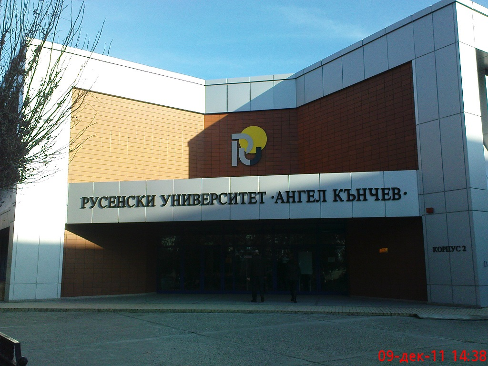
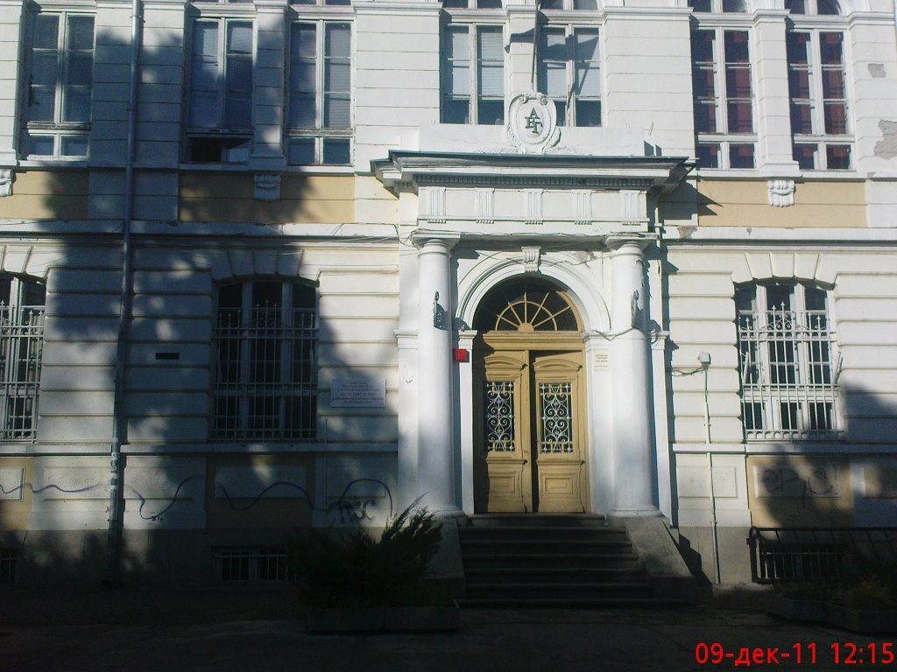
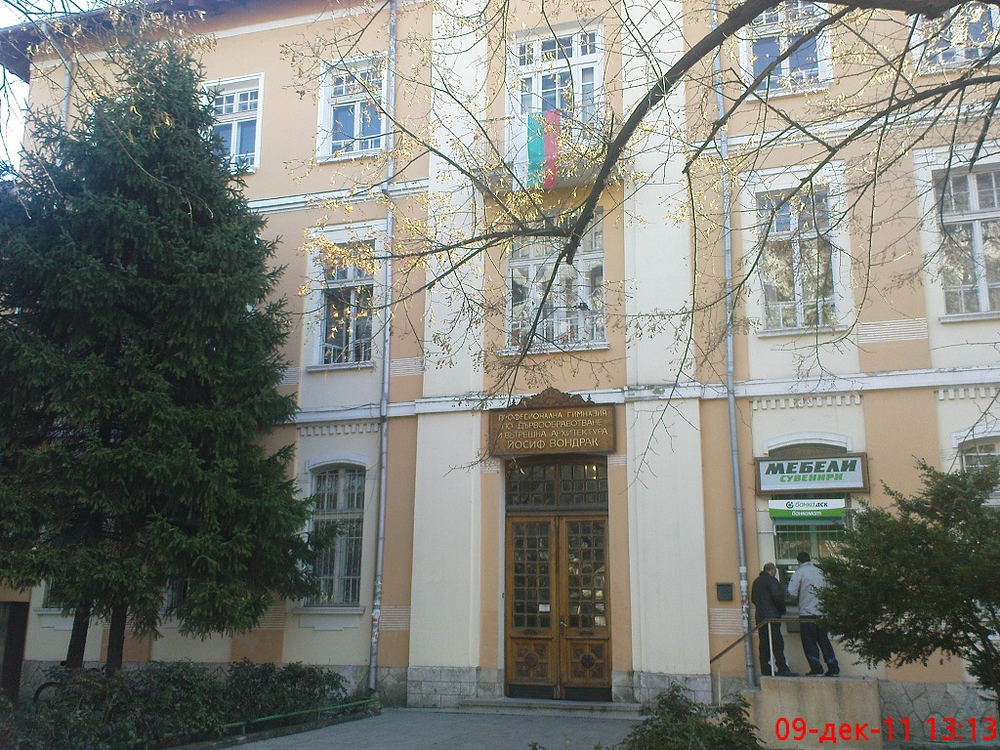

 Русенският университет "Ангел Кънчев"
{kind=link}
Русенският университет "Ангел Кънчев" е автономно държавно висше училище. Той е преобразуван с решение на Народното събрание от 21 юли 1995 г. и е приемник на висшето техническо училище, създадено в Русе на 12.11.1945 г. В структурата на университета са включени осем факултета: Аграрно-индустриален факултет; Машинно-технологичен факултет; Факултет Електротехника, електроника и автоматика; Транспортен факултет; Факултет Бизнес и мениджмънт; Факултет Природни науки и образование; Юридически факултет; Факултет Обществено здраве и два филиала: Филиал на Русенския университет в гр. Силистра и Филиал на Русенския университет в гр. Разград.Русенският университет "Ангел Кънчев" има за своя основна цел развитието и утвърждаването на университета като значима регионална и национална образователна и научноизследователска институция и превръщането му в неразделна част от европейското образователно и научноизследователско пространство. В модерни учебни зали и изследователски лаборатории, разположени на обща разгърната застроена площ от 60 594 кв.м. (от които над 13000 кв.м. в новопостроения и въведен в експлоатация през 2010г. учебен корпус-2) се обучават около 10 000 студенти и докторанти. Обучението се провежда от 489 висококвалифицирани преподаватели на основен трудов договор, от които 31 професори, 177 доценти и 85 доктори и доктори на науката. В учебния процес са включени и много хонорувани признати специалисти в съответната област. На всички желаещи студенти е осигурено общежитие и прекрасна база за спорт и почивка. Русенският университет е сред избраните от Европейската TEMPUS комисия 18 университета от 11 централноевропейски страни, постигнали най-добри резултати в преустройството на висшето образование. Националното и международното призвание е потвърждение, че той се изгражда и развива като съвременен университет с европейско ниво на обучение. През 2006 г. Русенски университет "Ангел Кънчев" е акредитиран от НАОА с много висока оценка. В Русенския университет има акредитирани 18 професионални направления в следните области на висшето образование: Педагогически науки; Социални, стопански и правни науки; Природни науки, математика и информатика; Технически науки; Здравеопазване и спорт.
 Английска гимназия "ГЕО МИЛЕВ"
{kind=link}
Английска гимназия "ГЕО МИЛЕВ" - гр. Русе е общинско средно училище с петгодишен курс на обучение, включващ широк спектър от образователни програми със специален акцент върху интензивна чуждоезикова подготовка. Училището е с чуждоезиков профил. Профилиращите предмети са английски език, втори чужд език - немски, френски или руски език и български език и литература. Тенденциите на развитие на съвременното общество предполагат не само доброто владеене на чужди езици, но и наличието на широка хуманитарна култура и висока образованост, на космополитно мислене и ориентация към европейската ценностна система. Гимназия "Гео Милев" е част от системата на асоциираните училища към ЮНЕСКО. Участва в реализирането на множество национални и международни проекти, ориентирани пряко към потребностите на ученици и учители. Има изградено добро сътрудничество с много неправителствени организации.
 ПРОФЕСИОНАЛНА ГИМНАЗИЯ ПО ДЪРВООБРАБОТВАНЕ И ВЪТРЕШНА АРХИТЕКТУРА „ЙОСИФ ВОНДРАК”
{kind=link}
ПРОФЕСИОНАЛНА ГИМНАЗИЯ ПО ДЪРВООБРАБОТВАНЕ И ВЪТРЕШНА АРХИТЕКТУРА „ЙОСИФ ВОНДРАК” - РУСЕ е създадена преди повече от сто и двадесет години. През 1883 г. отваря врати първото и единствено по рода си училище по столарство, наречено „Държавна учебна занаятчийница”. Скоро училището придобива известност дори извън пределите на страната на международни изложби: Още от учебната 1897/1898 г. при завършване на занятията се подготвя мебелна изложба – традиция, запазена до днес. През 1906 г. Йосиф Вондрак – първият директор на училището – полага основния камък на сегашната сграда. Дело на наши възпитаници са: прочутият кабинет в бяло за двореца в Евксиноград, мебелите, изработени от чуждестранни фурнири в края на 30-те години, спалните от пирамидален махагон, столовата от палисандрово дърво – шедьовър, създаден през 1920 г., кабинетите, направени от съчетание на ясен, коренища и орех. От началото на 40-те години на ХХ в. са дърворезбите на входната врата на църквата „Света Троица”/1930/, владишкият трон /1932/, иконостасът в църквата „Света Богородица” в град Русе. Гимназията, носител на орден „Кирил и Методий” I степен, е с достоен принос в професионалното дело. Преосмисляйки традициите, ПГДВА”Йосиф Вондрак” гради настоящето и уверено очертава бъдещето. Обучението се осъществява от висококвалифициран преподавателски екип. Една част от нашите възпитаници продължават обучението си във ВУЗ,а друга част намират добра реализация,започвайки работа в мебелни фирми. Училището разполага с модерни компютърни кабинети и постоянен достъп до Интернет, учебни работилници за професионална подготовка, библиотека с богат книжен фонд, спортни площадки и физкултурен салон.